You will never know the value of a moment until it becomes a memory.
Time steals everything. Only words and images can resist its plunder.
This was my first experience with Digital Practice. I found the critical thinking involved very new and interesting, which made me really interested in the subject. It also made me look forward to the upcoming Digital Practice sessions, especially those that involve practical activities.
I have to create my own website!!! What an exciting and new experience!!! I really enjoyed the process of building everything from scratch, gradually adding content and developing the structure. It feels like a process of expressing my inner thoughts outwardly, and turning my ideas into digital content. I need to think carefully about what I want my website to look like and what I want it to communicate.
I learned about two ways to create a personal website. One is to use the fixed structure provided by CampusPress and simply add content to it. The other offers much more freedom, as it requires me to write my own code to design the structure and add content. Although the second option is more challenging, the idea of creating a personal website entirely by myself, without being limited by someone else's framework, is so appealing! I am ready to take on the challenge and bring my own ideas into every aspect of my personal website~
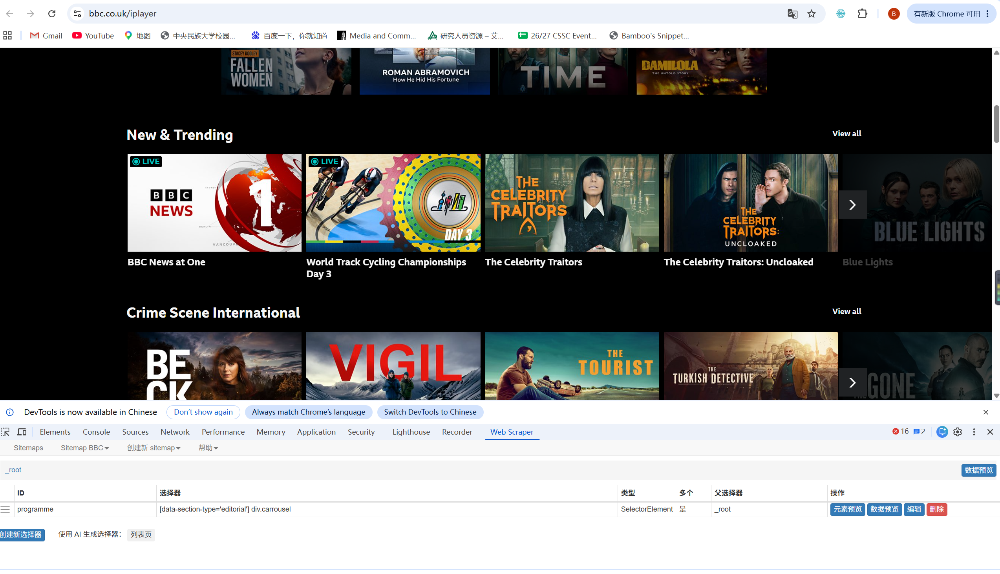
There have been some issues with my web scraping.
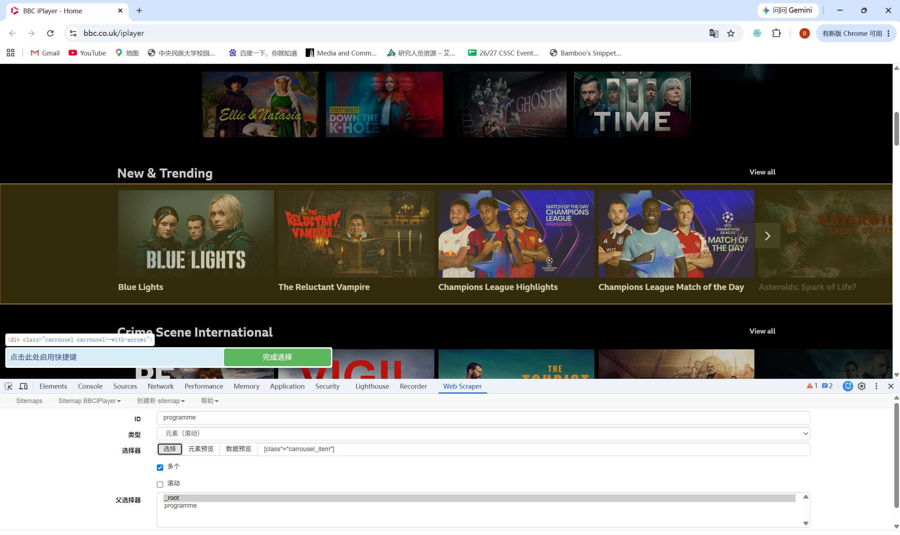
The content scraped from the pages is incorrect; the blank space next to it was selected together.
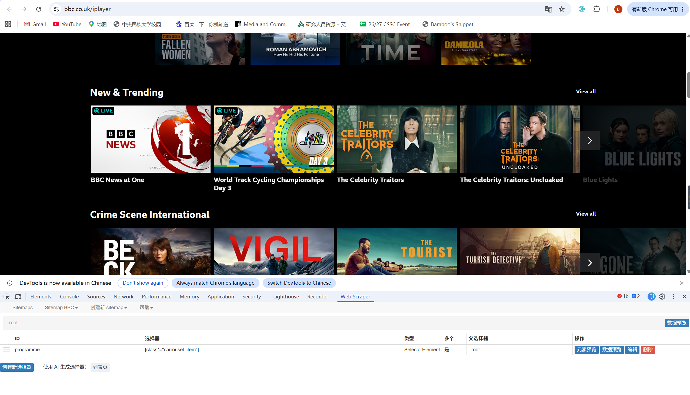
It's correct now, because I filled in the code given by the teacher.
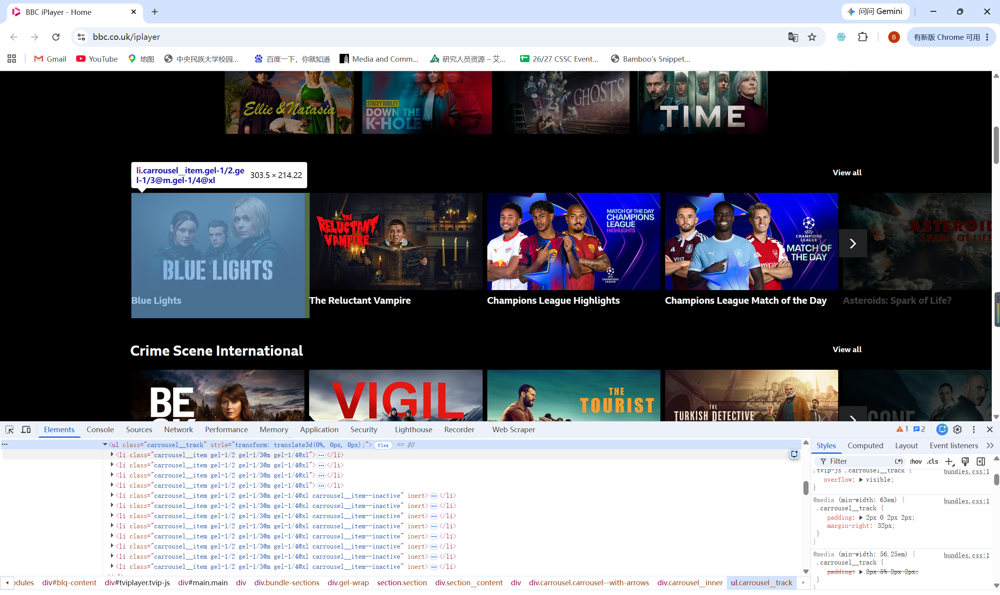
I tried to look for the correct code in Elements. I think it should be here.
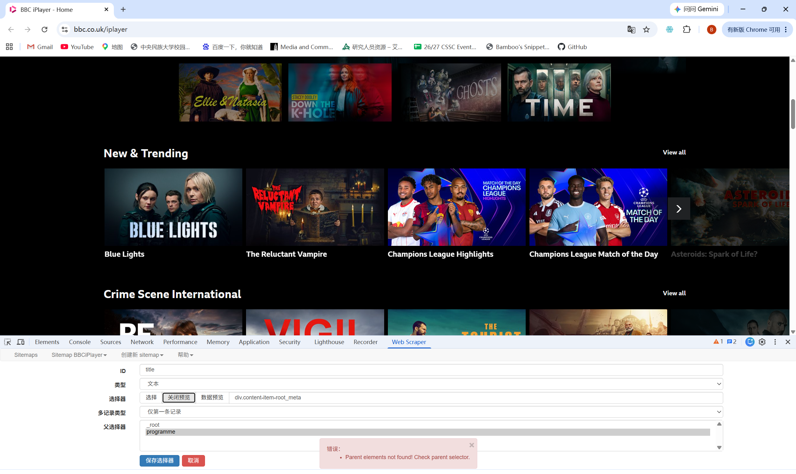
This is also the code provided by the tutor that I filled in directly, but I am not sure where the error is. My head is dizzy from looking at the code now, I need to take a break and check it again later.
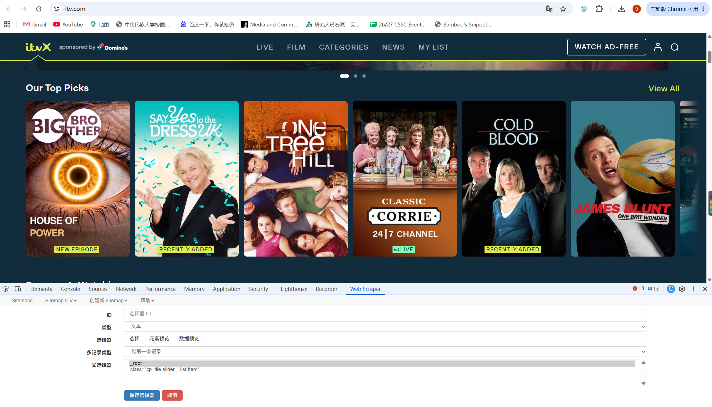
This is the code I found directly in the Elements tab on the ITVX page. I do not know whether it is correct, because I have no idea how to proceed to the next step. However, I have got in touch with a fellow student who has relevant experience, and we have arranged that he will help me learn it this weekend.
I tried to search from social media platforms and academic websites in order to make the data sources more comprehensive.
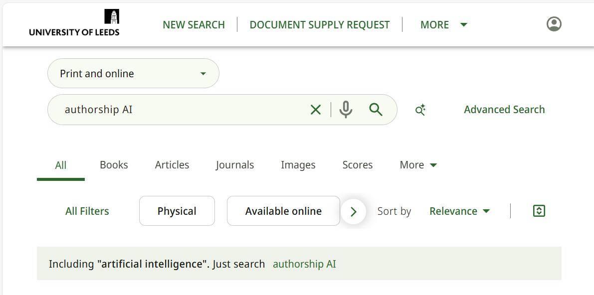
However, I found that there was not much information available across different platforms, so I tried to find alternative keywords in academic papers.
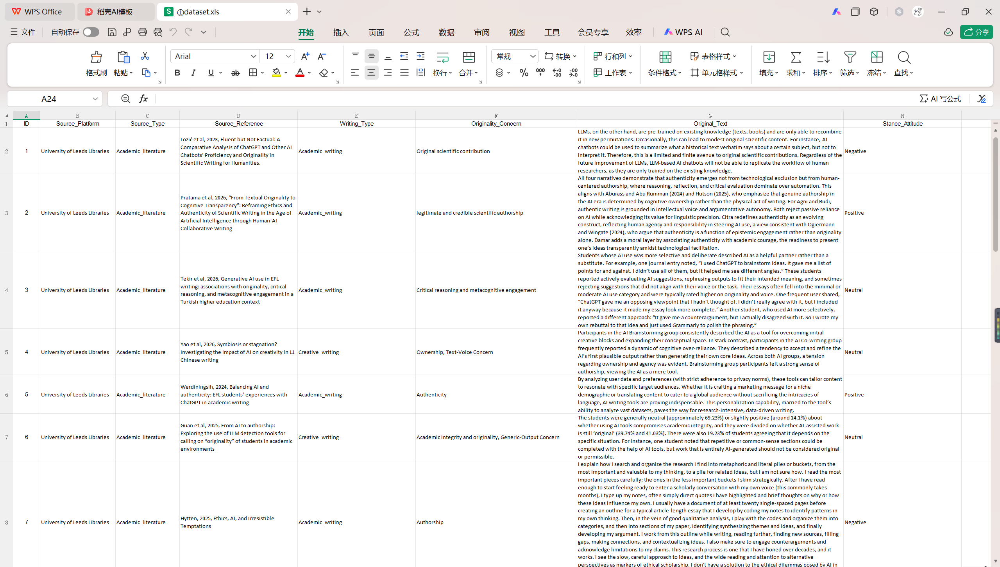
I organised the information I had collected in an Excel spreadsheet using seven column headers: source platform, source type, source reference, writing type, originality concern, original text, and stance attitude.
I have never carefully read the privacy policy of every app I use. Although I do have concerns about my personal privacy, privacy policies are often very long, and if I do not agree to them, I cannot use the app. As a result, whenever I download a new app, I now usually skip this content and directly click “agree”. It seems that I have gradually accepted the idea that personal privacy is difficult to fully protect in the age of big data. As a result, I have made myself care less about it, because I feel that I cannot simply stop using apps just because I do not want them to collect my personal information.
In this week's group task, our group chose Scenario 1 and attempted to collect data about how people define the boundaries between AI-generated work and originality in academic and creative writing. During the data collection process, I kept thinking about ethical issues related to researcher neutrality. I sometimes find it difficult to avoid collecting data with my own existing views and attitudes in mind. This made me question whether the dataset we present can ever be completely neutral and without a particular position. I have started to develop some doubts about whether data itself can contain certain tendencies and attitudes. I am looking forward to discussing these questions with everyone next week.
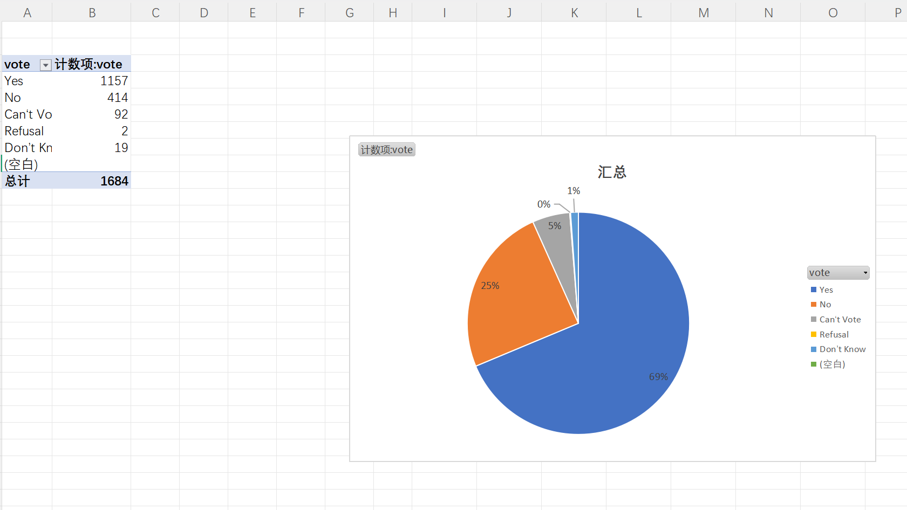
With the teacher's guidance, I used Excel to visualise the data and create charts. The data, which had initially looked overwhelming and disorganised, became much clearer and easier to understand.
However, I need to remember that although charts make data clearer, the types of charts and the main column headers I choose should vary depending on the target audience. Therefore, data is not simply about the information itself; it also carries broader meanings and messages.
"The way data is understood, captured, classified, and named is fundamentally an act of world-making and containment"(Crawford, 2021, p. 121).
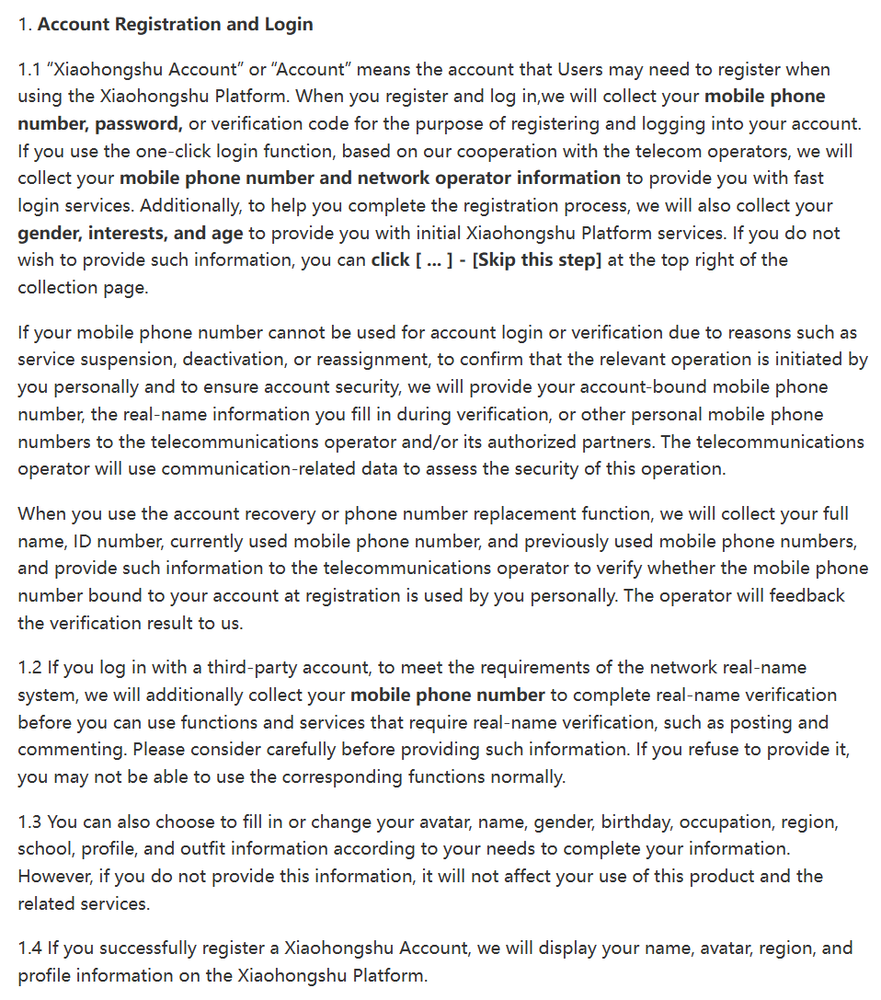
Social media platforms mainly collect users’ personal information, such as gender, age, location, marital status, whether they have children, homeownership status, occupation and educational background. They also collect information about users’ platform activities, including likes, shares, comments, frequently viewed content and browsing history. However, Rednote provides limited and unclear information about how these data are collected and used, even though we provide the platform with our personal information. On the one hand, the platform can make money by selling these data to advertising companies. On the other hand, it can use them to build individual user profiles and recommend content that we may be interested in, in order to keep users engaged and encourage them to continue using the platform.
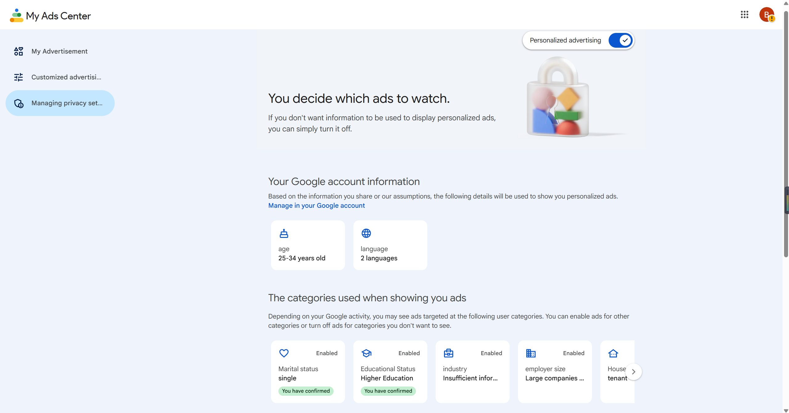
What surprised me most were the categories of marital status and employer size. Not only could I not understand why Google needed this information, but the information displayed by Google did not match my actual situation. I think that platforms can not fully understand users' real thoughts and personal lives. The platform can see that I have liked a post, but it does not necessarily know why I liked it. It can record that I have viewed a product, but it does not necessarily know whether I actually want to buy it. It can predict my interests based on my browsing history, but these predictions may not always be accurate. It can collect the information I provide voluntarily, but it cannot fully understand my real identity, emotions and personal experiences based on this data alone. Therefore, the user profile created by the platform does not represent the real me. Instead, it is an algorithmic identity constructed through limited data and algorithmic predictions.
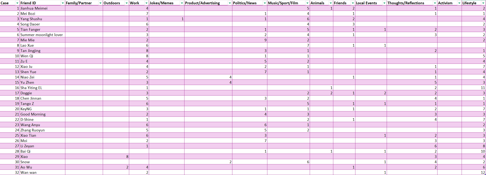
During the classification process, I found it difficult to assign each poster to a single category because most posters did not contain just one type of content. For example, a single poster might include both animals and family or friends. Therefore, after setting some simple classification rules, I had to classify the posters again. However, even with these rules, the classification process remained highly subjective. The resulting user profiles were also rather limited and one-sided, and did not truly represent what my friends are like.
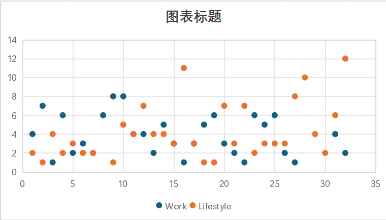
However, it is not only my classification criteria that are subjective. Algorithms, platforms and technologies are not entirely objective or neutral either, because they are also designed and defined by humans. For example, I selected two categories, work and lifestyle, from the thirteen categories to present in my visualisations. Similarly, algorithms also selectively present certain information. However, this does not mean that the identities constructed through this content are completely false, because even fictional content can reflect the account owners' thoughts and ideas. I think this is a complex process.